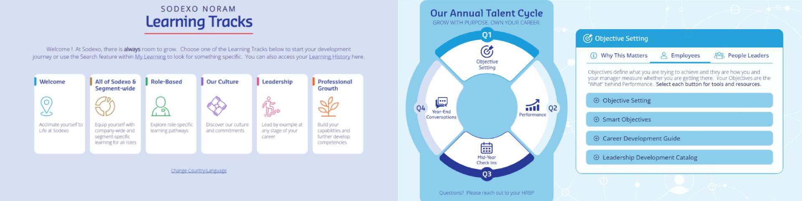
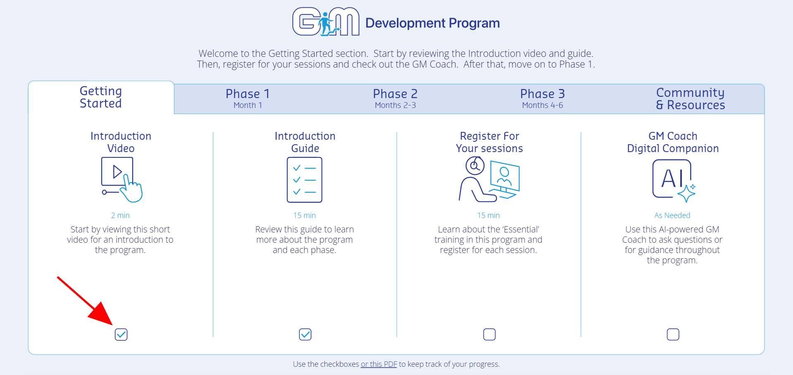
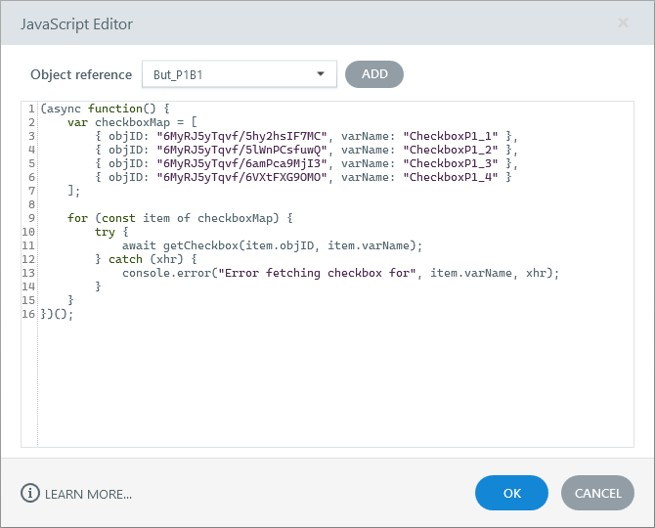
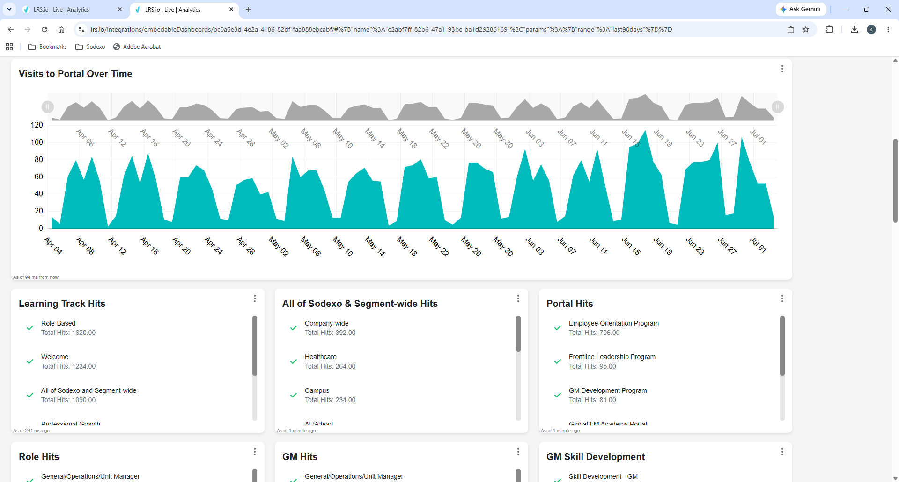

Case Study
Learning Portals
Custom learning portals built as the front door to the company’s core programs — trading the limits of the LMS for full control of the look, layout, and functionality. More than 15 builds, brought in-house, with a Veracity LRS layer that keeps learner progress across sessions.

The Challenge
Our learning programs were missing a front door — a way to drive the learning experience in an intuitive, meaningful way. The LMS itself was very limited: there was little you could do to control the layout, the look and feel, or the functionality of a program built inside it.
So we came up with the idea of building custom learning portals — websites that would serve as the front door to our core programs. A portal let us fully control the learning experience: a custom look and feel, a deliberate layout, and whatever functionality the program needed. Each one gave learners a centralized, streamlined place to access all of a program’s training content.
Bringing Portal Development In-House
When we first started, several years ago, we hired an external vendor to build the first couple of portals. It was costly and time-consuming, with a lot of back-and-forth.
With my background in web design and eLearning development, I suggested I could build the portals in-house instead. That reduced our reliance on external vendors and saved the organization hundreds of thousands of dollars in development costs — and it sped things up considerably, with no vendor conversations to schedule around.
Why Articulate Storyline
I chose Articulate Storyline to build the portals because it simplified both development and maintenance. I could stand up a portal quickly and update it easily as a program changed. It also allowed me to more easily create custom functionality. Rather than using Storyline only for traditional course development, I extended it with variables, triggers, JavaScript, xAPI, and an LRS to create a more application-like learner experience.
Designing Each Portal
Over the years I designed and developed more than 15 learning portals for programs across the company, and maintained each one — adding new content and features over time.
Every portal started with structure. I worked with the business owner and design team to plan how the program should be organized, creating an outline that grouped all the content into categories and phases so learners could progress through it clearly.
From that outline, I used my UI/UX background to create custom visual mockups for the portal’s layout and look and feel. Many portals had a distinct visual identity aligned to what they taught. For speed and simplicity, I built the mockups in PowerPoint, shared them with the project team, and refined them until we were happy. The approved mockup became the blueprint for the build.
I handled all of the development, building out every one of the 15+ portals in Articulate Storyline.

A Data Layer for Learning and Persistent Learner Progress
Over time I implemented and administered xAPI and a Learning Record Store (Veracity), including custom reporting dashboards used to analyze learner activity within the portals.
As my xAPI skills grew, I built custom progress-tracking functionality. Learners could see at a glance which activities they had completed using interactive checkboxes within the portal. Completion information was stored in the LRS and retrieved through JavaScript when a learner returned, so progress persisted across browser sessions. I leveraged AI-assisted coding to develop this functionality.
This allowed the portal to function as more than a collection of links — it became a centralized learning experience with built-in progress tracking.

Behind the Experience
Learner activity is captured through the portal, recorded through xAPI in the LRS, and retrieved by JavaScript so the Storyline experience can reflect persistent progress.

Technology & Development
Articulate Storyline
The build platform for every portal — layout, navigation, interactions, and custom behavior through triggers and variables. Fast to create, easy to maintain.
JavaScript
Extended Storyline past its defaults and retrieved learner completion data from the LRS to persist progress between browser sessions. Developed with AI-assisted coding.
xAPI / LRS (Veracity)
Implemented and administered the data layer that captured portal activity and fed custom reporting dashboards.
UX/UI Design
Custom visual mockups in PowerPoint set each portal’s structure and look and feel, often themed to the program it taught.
Business Impact
- Replaced the constraints of the LMS with custom portals that gave full control of the learning experience — look and feel, layout, and functionality.
- Brought portal development in-house after a vendor built the first few, cutting reliance on external vendors, speeding up delivery, and saving the organization hundreds of thousands of dollars in development costs.
- Designed and developed 15+ learning portals for programs across the company, and maintained each over time with new content and features.
- Implemented and administered xAPI and a Veracity LRS, with custom reporting dashboards for analyzing learner activity across the portals.
- Built persistent learner progress tracking — completion data stored in the LRS and retrieved by JavaScript so progress follows the learner across sessions.

What I Learned
This work pushed my role well beyond traditional eLearning and Storyline development. It reinforced the value of combining learning design with web design, UX/UI, technology, and data — and showed that Storyline, paired with JavaScript, xAPI, and an LRS, can support far more than traditional courses.